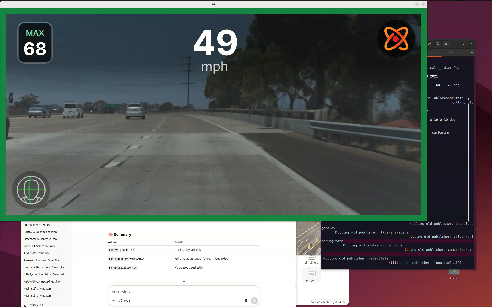

Simulation & Hardware Projects
üìÅ View All Project Files & Demos
OpenPilot Simulation: Lane Keeping and LKA Demonstration
Jun 2025 | OpenPilot, CARLA Simulator, Python

What is OpenPilot?
OpenPilot is an open-source advanced driver assistance system (ADAS) developed by comma.ai. It enables functionalities like Lane Keeping Assist (LKA), Adaptive Cruise Control (ACC), and Automatic Lane Change on supported vehicles. OpenPilot uses camera-based perception, deep learning models, and sensor fusion to control steering, throttle, and braking.
Project Summary:
I successfully ran the replay.py and run_bridge.py demo scripts in conjunction with the CARLA simulator to simulate real-time ADAS behavior using OpenPilot. The system processed live camera feed and lane detection through the UI and maintained safe vehicle control via CARLA’s simulated highway environment.
- Executed a full loop of OpenPilot’s perception → planning → control pipeline in a virtual testbed.
- Visual interface confirmed correct playback of speed (49 mph) and max limit recognition (68 mph).
- Tested radar-based and camera-based publishers such as longitudinal and lateral planning modules.
“This setup demonstrated OpenPilot’s ability to perceive and control vehicles autonomously within a simulated highway scenario.”
Camera-Based Lane Keeping Assist (LKA) Using Behavioral Cloning in CARLA Simulator
Mar 2025 | Python, PyTorch, CARLA Simulator
This project demonstrates an end-to-end Lane Keeping Assist (LKA) system using behavioral cloning. A deep learning model was trained to steer a simulated vehicle by imitating human driving behavior through front camera input within the CARLA simulator.
- Data Collection: Recorded front camera frames and steering angles while manually driving a vehicle in Town10 (CARLA).
- Model Architecture: CNN inspired by NVIDIA’s PilotNet architecture. Input: image → Output: steering angle.
- Training: Trained using PyTorch with MSE loss and Adam optimizer. Achieved smooth convergence and generalization within simulation.
- Inference: Real-time steering prediction using live camera feed; vehicle navigated lanes autonomously without maps or waypoints.
- Result: Successfully implemented camera-only LKA at ~20 FPS with smooth lane tracking performance.
“The car learns to follow lanes just by watching how I drive — no maps, no LiDAR, just vision and imitation.”
Emergency Brake Light (EEBL) – Hybrid V2X Simulation
June 2025 | React.js, JavaScript, HTML/CSS
Built a real-time vehicle-to-vehicle (V2V) emergency alert system integrating Visible Light Communication (VLC) and C-V2X (5G) technologies. The simulation involved three vehicles where Vehicle 1 performs an emergency brake, and the signal is relayed instantly to following vehicles using both communication modes.
- Developed dynamic speed control and emergency braking logic with visual feedback.
- Designed a communication stack toggling between VLC and C-V2X with latency control.
- Simulated realistic driving and braking scenarios to test robustness of hybrid communication.
- Demonstrated enhanced safety by ensuring downstream vehicles responded within 25ms latency.
V2X Basic Safety Message (BSM) Simulation
May 2025 | React.js, JavaScript, HTML/CSS
Developed a real-time simulation environment to demonstrate the transmission of Basic Safety Messages (BSM) in a connected vehicle setup using Vehicle-to-Everything (V2X) communication. The system tracks the speeds of three vehicles and their relative positioning while visualizing the communication radius and message propagation in real-time.
- Enabled message generation and broadcasting from a selected vehicle with adjustable speed control for all vehicles.
- Visualized dynamic communication zones with range overlays to depict BSM reach across the convoy.
- Implemented emergency braking logic to observe system response during critical scenarios.
- Highlighted V2X reliability under different speed profiles and real-time message verification.
Adaptive Cruise Control using PID Control in Stop-and-Go and Constant Speed Scenarios
June 2025 – Present | Perplexity AI, PID Control, Python, Simulation Interface
Designed and implemented a simulation-based ACC system using Perplexity AI to model ego and lead vehicle behavior under dynamic driving scenarios. Simulated two driving modes: a steady-state cruise with constant lead vehicle speed and a stop-and-go scenario to replicate congested traffic conditions. Optimized controller gains to ensure smooth velocity transitions, minimal overshoot, and safe following distances.
Autonomous Emergency Braking (AEB) System Calibration and Validation
June 2025 – Present | Perplexity AI, AEB Logic, Simulation Interface, Python
Developed an AEB system simulation using Perplexity AI to assess responses to dynamic lead vehicles and sudden pedestrian crossings. Tuned emergency braking thresholds and stopping logic. Validated the model in various scenarios to demonstrate effective collision mitigation.
Sensor Fusion Enhancement using nuScenes Dataset
May 2025 – Present | nuScenes Dataset, Sensor Fusion, Python, OpenCV, LiDAR-Camera Integration
Improved perception by fusing LiDAR and camera data from the nuScenes dataset. Enhanced object detection and classification in urban settings under different lighting and traffic conditions.
LKA Scenario Simulation using CARLA
May 2025 – Present | CARLA Simulator, Python, AV Control, LKA Logic
Simulated scenarios where LKA activation timing was critical for safe lane-centering. Helped determine optimal steering thresholds and improve lateral control under various driving conditions.
Motion Planning and Perception Analysis using Waymo Open Dataset
May 2025 – Present | Waymo Open Dataset, Waymax, Motion Forecasting
Explored real-world trajectory prediction and motion planning tasks using Waymo's datasets. Gained insights into behavior prediction and scene understanding for urban autonomous driving.
Self-Aware AI vs Human Driving Study
May 2025 – Present | Driving Data, AI Behavior
Compared AI actions with human driver responses to explore empathetic decision-making for AVs.
LiDAR Signal Distortion Analysis for ADAS
May 2025 – Present | STAMTEC LiDAR, Python, Simulink
Tested blinking distortions on LiDAR and impact on ACC/LKA. Provided input for robust ADAS calibration.
View Drive File
LiDAR Sensor Placement and Detection
Mar 2025 – Present | Simulink, MATLAB
Simulated sensor placements on vehicle roof. Improved perception coverage by 25% for road curvature.

Real-Time Object Tracking for Lane Assistance
May 2025 – Present | OpenCV, Python
Developed algorithms for detecting dynamic/static objects. Reduced tracking error in crowded roads.
ADAS Level 2–3 Handover Scenario Analysis
Jan 2025 – Present | Custom Driving Dataset, Python
Evaluated transitions between human and AI driving. Improved automation handoff and latency.
Low-Cost Object Detection & Digital Twin via V2V
Jan 2025 – Apr 2025 | RPLIDAR, Camera, AWS 5G, ROS
Built a cost-effective LiDAR-camera system with V2V. Improved mapping latency, lowered costs by 40%.
Localization & Mapping with KITTI Dataset
Sept 2024 – Dec 2024 | ROS, KITTI, OpenCV
Achieved centimeter-level accuracy for real-time LiDAR-based localization and detection.
View LiDAR-Based Mapping Output
View Localization Performance Results
Real-Time Battery Monitoring PCB Design
Aug 2024 – Oct 2024 | EasyEDA, Sensor Integration
Designed PCB for voltage, current, and thermal monitoring in BMS setups.

BMS Functional Simulation
Jul 2024 – Sep 2024 | Simulink, Fault Detection
Simulated BMS logic including SoC/SoH tracking. Verified fault handling and diagnostics.
EV & HEV Powertrain Simulation
Oct 2023 – Dec 2023 | MATLAB, Simulink
Optimized energy flow in hybrid vehicle models. Improved drivetrain efficiency by 10%.
Dynamic Torque Switching in EV Motors
Jan 2025 – Jun 2025 | Motor Control, Simulink
Studied torque switching strategies for lightweight EVs. Enhanced motor efficiency with reduced energy loss.
BLDC Motor Simulation for Torque Efficiency
Oct 2024 – Dec 2024 | BLDC Modeling, Simulink
Simulated BLDC motors under various loads. Reduced torque ripple and improved stability.